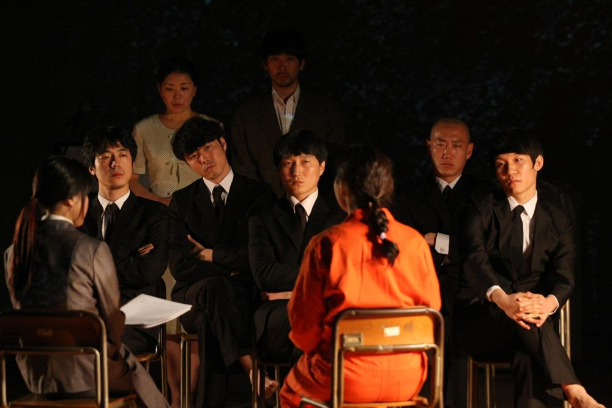

'전쟁'을 화두로, 살고 있는 땅 밑에 존재하는 사그라져 간 소리 없는 아픔과 상존하고 반복되는 잊혀지는 감각들에 대해 흙을 통해 말한다. 그린피그의 '형식에 대한 지독한 반성' 시리즈 세 번째 작품으로, 희곡을 구현하기보다 연기와 음악, 영상, 미술 등의 장르를 결합해 단절된 사건과 이미지, 구술된 증언들의 추적과 병치로 표현된다. 억압된 기억의 증언을 통해 역사적 사건을 대면하고, 상처를 안고 죽어 간 자들을 기록되지 않은 역사 속에서 불러내 애도한다.
2010.7.30–8.15 / 토탈미술관
2010.8.17–18 / 창무 포스트극장 - 서울프린지페스티벌
2010.9.18–19 / 삼일로창고극장 - 서울변방연극제
2012.10.12 / 토탈미술관 - 서울아트마켓 PAMS Choice 폐막작
2012.11.22–25 / 도쿄 니시스가모 - 페스티벌 도쿄
2017.11.7–10 / 독일 뮌헨 Einstein Kultur - SPIELART Festival
공동구성: 그린피그
글쓰기: 전성현
연출: 윤한솔
드라마터그: 박상현
움직임: 김수정
음악: 민경현
조명: 최보윤
영상: 함양아
의상: 이유선
사진: 손동식
출연(2010 서울변방연극제): 강효정, 김문호, 김혜영, 류경인, 박기원, 박성훈, 박하늘, 이동영, 이문하, 이정호, 이필주, 황미영
이전: 〈사람은 사람에게 늑대〉 | 다음: 〈누가 무하마드 알리의 관자놀이에 미사일 펀치를 꽂았는가?〉
아카이브로 돌아가기 | 아무 작품이나
발행일 2026.11.10